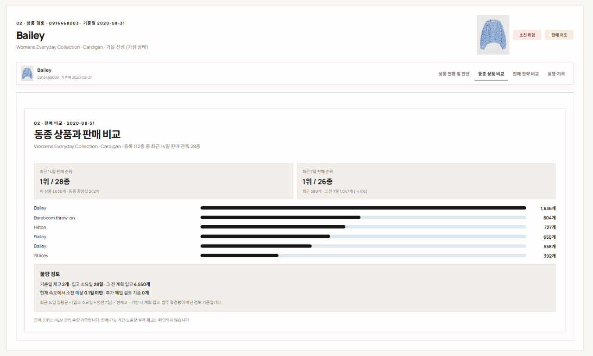
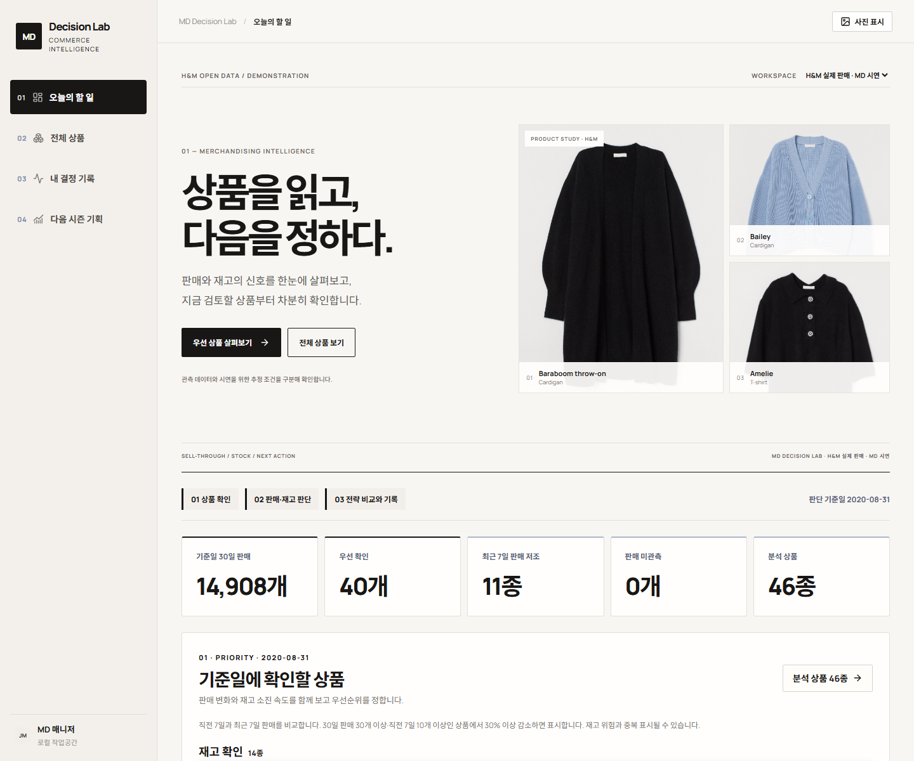
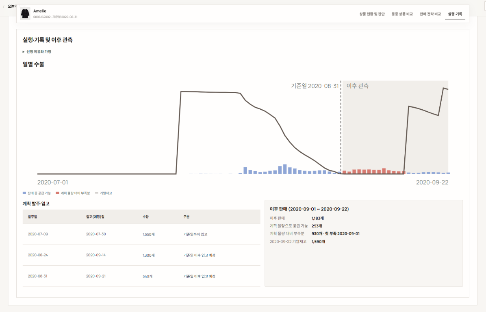
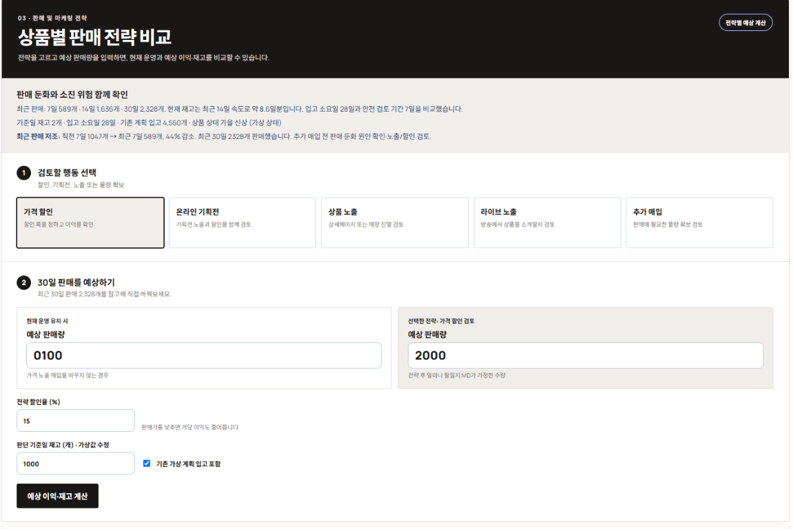

찾기
상품 검색 · 정렬오늘 먼저 확인할 상품을 판매 변화와 재고 위험 기준으로 정리합니다.
복잡한 판매·재고 데이터를 한눈에 읽고, 실행 전 손익과 다음 시즌 준비 물량까지 비교하는 MD 의사결정 도구
판매 데이터와 재고를 일일이 대조하던 업무를 줄이고, 우선순위 선정부터 전략 비교와 기록까지 하나의 작업 흐름으로 설계했습니다.
오늘 먼저 확인할 상품을 판매 변화와 재고 위험 기준으로 정리합니다.
엑셀에서 따로 계산하던 소진일과 예상 손익을 한 화면에서 비교합니다.
선택 이유와 실행 계획, 이후 결과를 연결해 다음 판단의 근거로 남깁니다.
업무 효율은 기능 구조로 설명하며, 실제 사용 시간 단축률은 별도로 측정하지 않았습니다.
현장 경험에서 문제를 정의한 뒤, 실제 거래 연결과 판단 기능 검증을 반복하며 MD 업무 흐름으로 완성했습니다.
상품·일별 판매·판단 기록 DB와 CSV 업로드, 재고 위험 규칙을 연결해 입력 → 분석 → 저장 흐름을 만들었습니다.
H&M 거래를 상품·일자별로 집계하고 2019·2020 비교와 9월 회고를 추가했습니다. 재고·원가는 별도 운영값으로 분리했습니다.
MD가 전략과 예상 판매량을 직접 입력하고 할인·노출·매입안의 이익을 비교하도록 화면을 판단 순서로 재구성했습니다.
동종 7·14일 순위와 판매 추세, 유사 상품의 두 시즌 흐름을 연결해 누적 인기와 최근 속도를 함께 평가했습니다.
발주·입고 일정의 재고 공백, 실행 계획과 행사 결과 기록을 추가해 당시 판단을 사후 판매와 비교하게 했습니다.
H&M 원본 거래를 상품별 판매 기록으로 정리하고, 원본에 없는 재고·발주·원가 조건을 별도로 생성한 뒤 전수 검증해 분석 DB에 연결했습니다.
transactions_train.csv
articles.csv
여성복 3개 섹션
2019·2020년 7~8월
기준일 2020-08-31
article_id를 문자열로 보존
상품·일자·채널 단위 집계
판매 변화 유형 분류
8/31 이후 판매는 선정에 미사용
재고·발주·리드타임
판매가·원가·상품 상태
SKU·수불·발주↔입고
음수 재고·정보 누출 검사
판매 변화·재고 소진
전략 손익·판단·시즌 기획
H&M 원본에서 사용한 실제 값은 상품 정보와 판매 기록이며, 재고·발주·리드타임·원화 판매가·원가는 관측 판매를 제약조건으로 생성한 운영 시뮬레이션 값입니다.
46종은 전체 상품을 대표하는 표본이 아니라, 판매 변화 유형을 바탕으로 실제 업무 판단 흐름을 점검하기 위해 선정한 운영 사례입니다.
상품 번호와 구매일을 기준으로 정리
2019·2020년 7~8월 · 여성복 3개 섹션
판매 변화 유형을 나눠 판단 기능 검증에 활용
상품을 찾는 단계부터 전략·시즌 기획까지, 각 질문에 필요한 지표를 연결했습니다.
우선 확인할 상품을 구분합니다.
예상 소진일과 입고 시점을 비교합니다.
매출총이익과 잔여 재고를 비교합니다.
기획 후보와 준비 물량을 검토합니다.
46종은 시장 전체를 대표하거나 통계적 효과를 입증하기 위한 표본이 아니라, 기능과 판단 흐름을 확인하기 위한 운영 사례입니다.
판매 순위는 경쟁 상품 안에서의 위치를, 기간 비교는 수요의 변화를 보여줍니다. 두 지표를 함께 확인해야 발주 판단을 놓치지 않습니다.

가로 막대는 상품별 판매량 비교입니다. 1위를 유지해도 최근 판매가 줄면 수요 둔화를 고려해야 합니다.
현재고 2개·리드타임 28일·계획 입고를 반영한 추가 발주 검토 기준은 0개입니다. 확정 발주량은 아닙니다.
판매 순위는 H&M 관측 판매 기준이며, 재고·입고·발주 검토는 운영 시뮬레이션 값입니다.
상품 탐색부터 시즌 기획까지, MD의 판단이 이어지는 다섯 단계를 먼저 살펴봅니다.
검토할 상품을 좁힙니다.
수요와 재고 신호를 읽습니다.
전략 대안을 수치로 비교합니다.
선택 근거와 결과를 남깁니다.
다음 시즌 준비 물량을 검토합니다.
판매 변화와 재고 위험을 자동 계산해 목록을 훑기 전에 확인해야 할 상품부터 보여줍니다.

전체 상품을 순서대로 확인하지 않고 위험 신호가 있는 상품부터 검토합니다.
상품명·번호·종류·섹션 검색과 판매량·재고 정렬로 검토 범위를 빠르게 좁힙니다.

검색 조건과 결과 건수를 확인해 검토할 상품을 찾습니다.
비슷한 상품을 기본 정보로 구분해 원하는 상품을 확인합니다.
지표를 정렬해 판매 흐름과 재고 수준에 따라 확인 순서를 바꿉니다.
기준일을 중심으로 재고 수불과 발주·입고 일정을 실제 판매 흐름에 겹쳐 보고, 공급이 부족해지는 시점과 이후 재고를 확인합니다.

기준일 이후 재고 공백과 회복 시점을 확인합니다.
입고 전후 공급 가능 시점을 나눠 살펴봅니다.
화면의 재고·발주·입고 수치는 H&M 원본 관측값이 아니라, 관측 판매를 제약조건으로 생성한 운영 시뮬레이션 예시입니다.
가격 할인·온라인 기획전·상품 노출·라이브·추가 매입 중 조치를 고르고, 전략 적용 후 판매량을 가정합니다.

할인율과 예상 판매량을 조정하고, 판매 증가 가능성과 이익 감소를 함께 확인합니다.
온라인 행사와 연계한 노출·할인안을 검토하고, 행사 적용 시 예상 판매량을 가정합니다.
상세 페이지나 매장 등 노출 위치를 선택하고, 노출 변화에 따른 판매량을 입력합니다.
라이브 방송에 상품을 소개하는 운영안을 가정하고, 방송 후 예상 판매량과 재고를 살펴봅니다.
추가 매입 수량과 발주·입고 조건을 설정해 입고 시점에 맞는 공급 가능성을 검토합니다.
현재 재고 1,000개에서 1,000개를 추가 매입하는 시나리오를 기준안과 비교했습니다.
 01
02
03
01
02
03
현재 운영 유지와 선택 전략의 30일 예상 판매량을 비교합니다.
발주일 8월 31일, 입고 소요일 1일을 적용해 9월 1일 입고로 계산합니다.
차이는 +4,598만 원이며, 예상 매출은 390만 원 → 7,800만 원, 잔여 재고는 900개 → 0개입니다.
화면의 판매량·재고·손익은 입력 조건에 따른 시나리오 추정치이며 실제 판매나 확정 매입 결과가 아닙니다.
결정 이후 실행 계획과 입고·행사 결과를 연결하고, 예상과 실제 차이를 다음 판단의 근거로 바꿉니다.


선택한 전략과 이유를 당시 숫자와 고정해 나중에도 같은 기준으로 확인합니다.
예정일과 실제 입고, 행사 기간과 결과, 진행 상태 변경을 이어 기록합니다.
판매량·재고·매출총이익 차이를 비교해 어떤 가정이 맞고 틀렸는지 회고합니다.
시즌 비교부터 판매 추정과 판단 회고까지, 다음 시즌 준비에 필요한 핵심 기능을 살펴봅니다.

섹션과 상품 종류를 고르고 지난 시즌과 올해 흐름을 비교합니다. 기획 후보를 선택해 다음 시즌 목표 물량을 기록합니다.
화면 아래 버튼을 눌러 기능별 예시를 확인하세요.화면 입력값을 그대로 믿지 않고 매출총이익, 날짜별 재고 공백, 동종 순위와 발주 검토량을 서버에서 다시 계산합니다.
price = round(unit_price *
(1 - discount_pct / 100), 2)
profit = expected_units *
(price - unit_cost) if feasible else Noneif expected_units * day > supply * 30:
first_gap = first_gap or date
# 날짜별 공급 가능성 확인rank = 1 + sum(
other > units_14d for other in peer_units)
review_units = max(0,
ceil(avg_14d * (lead_days + 7))
- stock - inbound)재고나 비교 근거가 부족하면 수치나 권고안을 임의로 만들지 않도록 예외 조건을 분리했습니다.
판매·재고 확인을 넘어 실행 전 손익 비교, 실행 후 회고, 다음 시즌 기획까지 이어지는 업무 도구를 직접 설계하고 검증했습니다.
흩어진 판매·재고·입고 정보를 우선순위, 소진 예상일, 매출총이익 지표로 바꿨습니다.
3,100만 건의 거래를 상품·일자별로 집계해 동종 순위, 판매 변화, 시즌 흐름을 분석했습니다.
기능과 계산 규칙을 직접 설계하고 AI로 코드를 구현한 뒤 잘못된 권고와 데이터 혼입을 테스트했습니다.
상품 선별, 전략 비교, 판단 기록, 회고, 다음 시즌 준비를 하나의 사용자 여정으로 연결했습니다.
현장의 문제를 데이터로 정의하고, 판단 기준과 UX를 설계하며, AI와 함께 실제로 작동하는 프로그램 개발과 검증을 하였습니다.